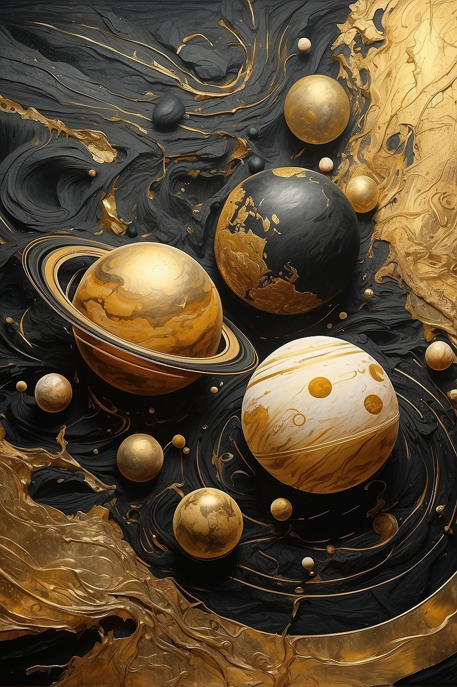
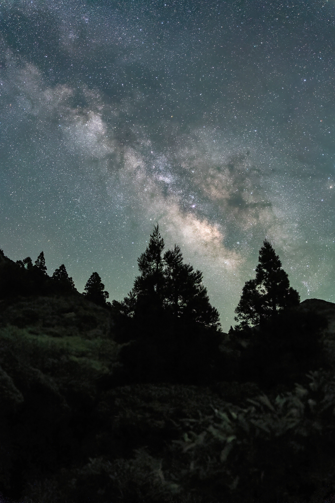
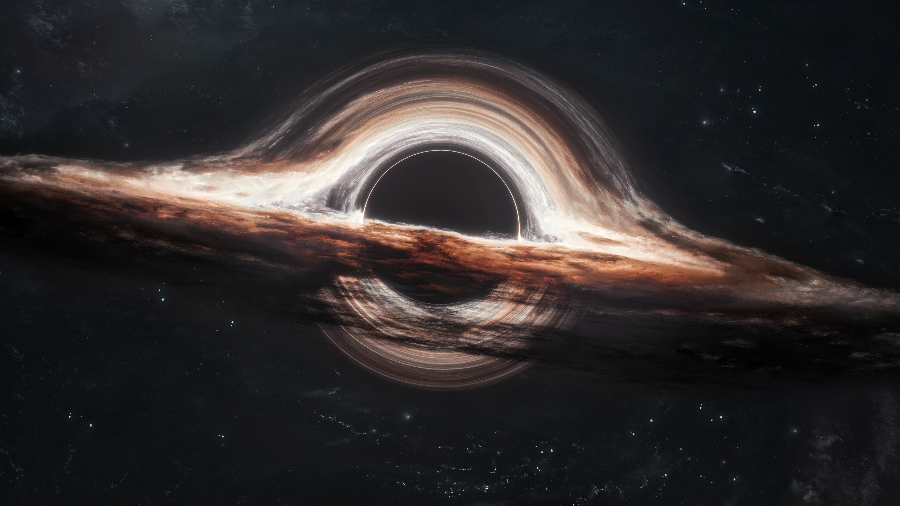

Join us on an epic journey through interstellar space
as we zoom out of the solar system
Earth — Our home...a fragile but extraordinary world suspended in the vastness of space. A pale blue dot that carries every story we’ve ever known.
“I believe a leaf of grass is no less than the journey-work of the stars.”
— Walt Whitman
Earth formed over 4.5 billion years ago and remains the only known planet to support life. Its surface is 71% water, regulating temperature and sustaining ecosystems across the globe.
A protective atmosphere shields life from harmful radiation, while tectonic activity continuously reshapes the planet. From oceans to forests to deserts, Earth is a dynamic, ever-evolving system — a rare phenomenon in the observable universe.
A vast gravitational system anchored by the Sun — where planets, moons, and celestial bodies move in silent precision. From the blazing inner worlds to the frozen outer edges, this is our cosmic neighborhood in motion.

The Solar System is centered around the Sun, a G-type main-sequence star that contains 99.8% of all its mass. Eight planets orbit it in elliptical paths.
Beyond Neptune lies the Kuiper Belt and the mysterious Oort Cloud — regions filled with icy remnants from the formation of the system, extending the Sun’s influence far into space.
Not just a galaxy — it is a vast, spiraling ocean of light and matter stretching across unimaginable distances. A luminous band woven through the darkness, it holds hundreds of billions of stars, each with its own silent story written in fire and gravity.

The Milky Way spans over 100,000 light-years and contains more than 100 billion stars. At its center lies Sagittarius A*, a supermassive black hole.
Our Solar System resides in one of its spiral arms — the Orion Arm — orbiting the galactic center once every 225–250 million years.
A vast and unseen architecture of the cosmos — a gravitational continent stretching across more than 500 million light-years of space. It is not a single object, but a connected flow of galaxies, drifting together like rivers converging into a single, immense cosmic basin.

"Laniakea” comes from Hawaiian, meaning “immense heaven".
Laniakea is not a traditional cluster but a vast supercluster of galaxies defined by gravitational flow. It contains over 100,000 galaxies, including our home, the Milky Way.
All galaxies within it move toward a central region known as the Great Attractor — a mysterious gravitational anomaly hidden behind dense cosmic dust.
Interesting thing is, at such a large scale...this supercluster of galaxies, with other superclusters combined together, form the cosmic web - which looks surprisingly like a web of neural networks, glowing with stardust. Which brings us back to the topic of our class ;)